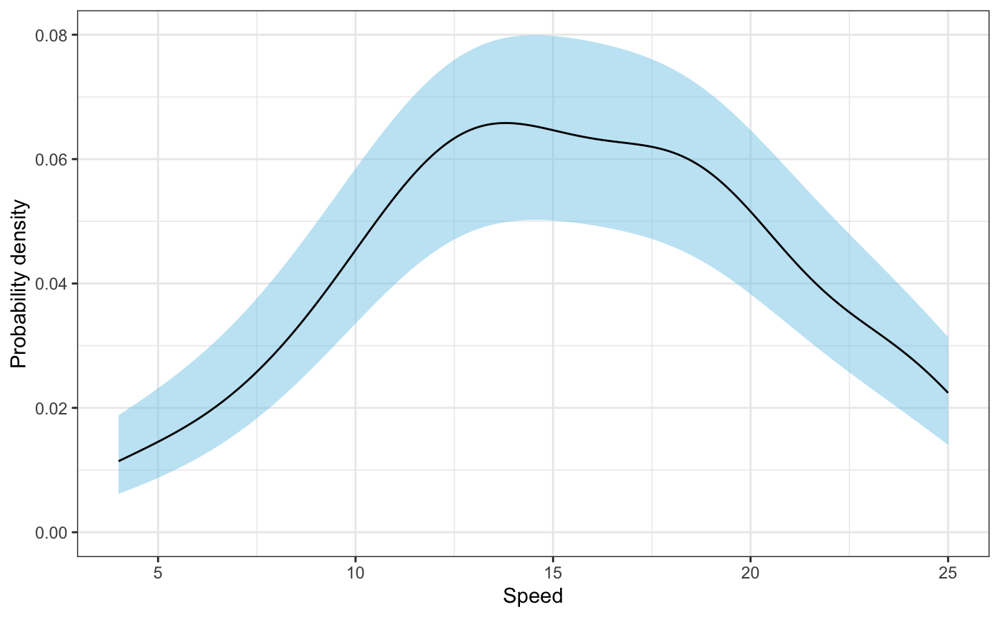
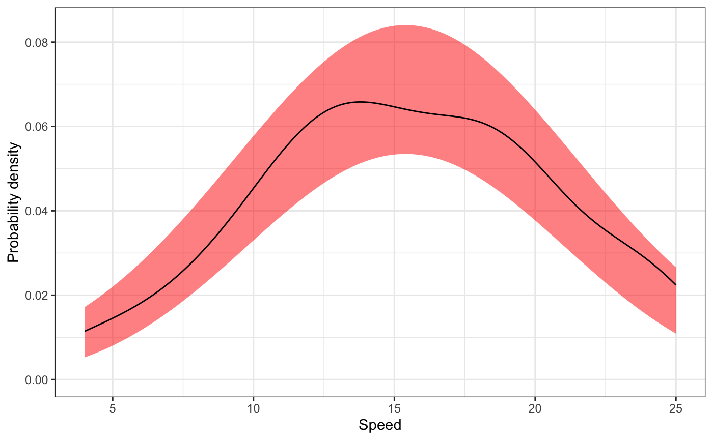
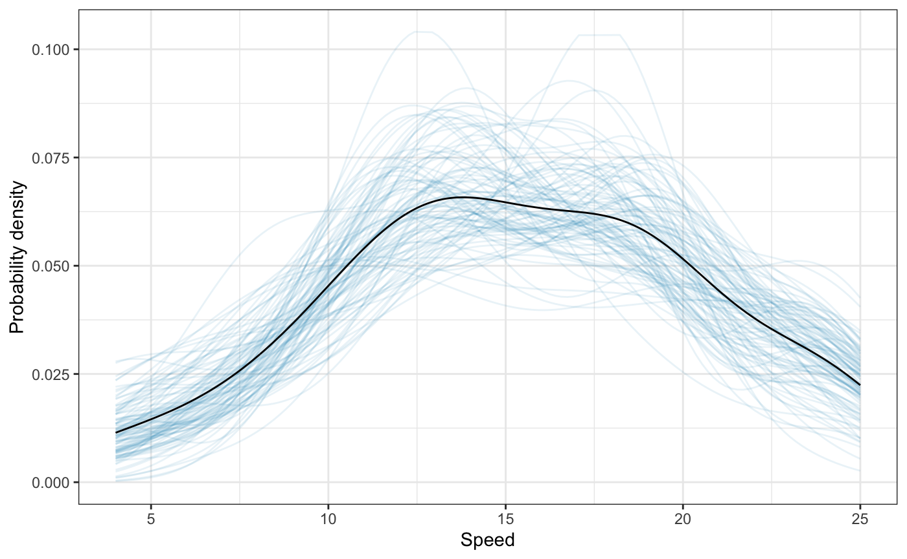
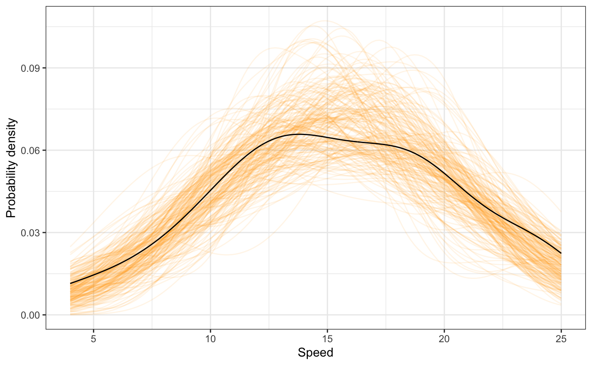

confidence-envelopes-for-densities.RmdThe educate package has two functions to generate confidence envelopes for kernel density smoothers:
stat_density_confidence() generates normal theory based confidence envelopesstat_density_watercolor() generates bootstrap based confidence envelopesBoth functions can be used as a layer directly in ggplot. Below I illustrate the usage and functionality of each of these functions.
# Load libraries
library(ggplot2)
library(educate)
# Normal theory based confidence envelope
ggplot(data = cars, aes(x = speed)) +
stat_density_confidence() +
stat_density(geom = "line") +
theme_bw() +
xlab("Speed") +
ylab("Probability density")
Optional parameters to the function include:
h=: A normal kernel function is used and h is its standard deviation. If this parameter is omitted, a normal optimal smoothing parameter is used.fill=: Fill color for the confidence envelope. The default is fill="skyblue"
model=: The model to draw the confidence envelope for. The default is model="none" which creates the confidence envelope from the data. Using model="normal" creates the confidence envelope based on a normal distribution.# Normal theory based confidence envelope from a normal distribution
ggplot(data = cars, aes(x = speed)) +
stat_density_confidence(model = "normal", fill = "red") +
stat_density(geom = "line") +
theme_bw() +
xlab("Speed") +
ylab("Probability density")
The argument model="normal" is useful for examining distributional assumptions. For example, could the empirical density have been generated by a normal model? Yes, since the empirical density is completely ontained within the confidence envelope, the data are consistent with what we expect from a normal model within sampling error.
We can create a bootstrapped confidence envelope by using the stat_density_watercolor() layer in ggplot. The parameter k= sets the number of bootstrap replications (default is k=1000).
# Bootstrap based confidence envelope
ggplot(data = cars, aes(x = speed)) +
stat_density_watercolor(k = 100, alpha = 0.1) +
stat_density(geom = "line") +
theme_bw() +
xlab("Speed") +
ylab("Probability density")## Boostrapping densities ...
Other options include:
alpha=: Transparency level for the paths that make up the bootstrapped densities. This may need to be adjusted if the argument k= is changed. The default value is alpha=0.03.color=: Color for the bootstrapped densities. The default is color="#1D91C0
model=: The model to draw the confidence envelope for. The default is model="none" which creates the confidence envelope from the data. Using model="normal" creates the confidence envelope based on a normal distribution.Aside from changing the color and transparency of the bootstrapped densities (color= and alpha= respectively), you can also change the number of bootstrapped samples (k=).
# Bootstrap based confidence envelope based on a normal distribution
ggplot(data = cars, aes(x = speed)) +
stat_density_watercolor(k = 200, alpha = 0.1, color = "orange", model = "normal") +
stat_density(geom = "line") +
theme_bw() +
xlab("Speed") +
ylab("Probability density")## Boostrapping densities ...